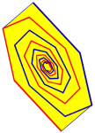

LTI System Identification Toolbox (Version 2.4, Released on: 9-Nov-2012)
- Getting Started
Introduces LTI System Identification Toolbox and gets you started using it.
- Installation
Installation procedure for the toolbox and the menu.
- Companion
Software manual for the LTI System Identification Toolbox.
- Functions:
- Release Notes
Summarizes new features, bug fixes, upgrade issues, etc.
- Book
The product page of the book "Filtering and System Identification"
Ivo Houtzager
Delft Center of Systems and Control
Delft University of Technology
i.houtzager@tudelft.nl
|